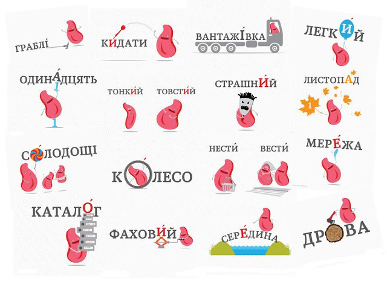

НАГОЛОС
Наголос у словах української мови є властивістю частини слова – складу. Наголос вказує на склад, який виділяється під час вимови слова. Дуже часто у людей виникають проблеми з правильним уживанням наголосу, бо часто в процесі спілкування ми чуємо неправильний наголос слів, а згодом і самі починаємо вимовляти деякі слова неправильно
Наголос у словах української мови складно правильно визначити, бо він не тільки може припадати на будь-який склад, але йому також властива рухомість – можлива зміна наголосу при відмінюванні слова. Ситуацію також ускладнює відсутність чітких правил щодо формування наголосу та велика кількість винятків. Проте наголос – одна з тем на ЗНО з української мови та літератури, тому нам необхідно знати ключові випадки утворення наголосу та основні винятки. Винятки треба просто запам’ятати!
Á a
Основні принципи наголошування іменників
- У більшості випадків іменники множини мають наголос на закінченні: наприклад, загадки, огірки.
- У більшості іменників жіночого роду із суфіксом -к при утворенні множини наголос переходить у закінчення: наприклад, тарілка – тарілки, книжка – книжки, АЛЕ: сусідка – сусідки.
- Іменники, що утворилися від дієслів, мають більше ніж два склади та закінчуються на -ання, частіше всього мають наголошений суфікс: наприклад, читання, завдання. АЛЕ: бігання, нехтування.
- В іншомовних словах, що позначають міри довжин, зазвичай наголос падає на -метр: наприклад, сантиметр, міліметр, дециметр. АЛЕ в назвах пристроїв – по-інакшому: термометр, барометр.
Основні принципи наголошування прикметників
- Суфікс прикметників -еньк-, що позначає пестливість, завжди є наголошеним: наприклад, маленький, чорненький, гарненький.
- У більшості випадків, коли прикметник має два склади, наголос падає на другий склад (тобто на закінчення): наприклад, дзвінкий, новий, тонкий, котрий.
Основні принципи наголошування дієслів
- Правила наголошування дієслова «бути» наступні: в теперішньому часі - бути, будемо, проте в минулому часі: була, було, були.
- Багато дієслів мають наголос на останньому складі: наприклад, нести, везти, мести.
- Дієслова із закінченнями -емо, -имо, -ете, -ите мають наголос на останній літері: наприклад, веземо, ідемо, підете. АЛЕ: будемо, гуркочемо, залишите.
- Інфінітив -ти: навестИ, віднестИ
Основні принципи наголошування числівників
- У числівниках, що закінчуються на –десят, наголос припадає на останній склад: наприклад, п’ятдесят, сімдесят.
- У числівниках, що закінчуються на –адцять, наголошений передостанній склад: наприклад, дванадцять, вісімнадцять.
Більше про наголос можете дізнатися ТУТ або ТУТ
У деяких словах, які будуть на ЗНО, наголос не піддається правилам, його потрібно тільки запам’ятати.

| >
|